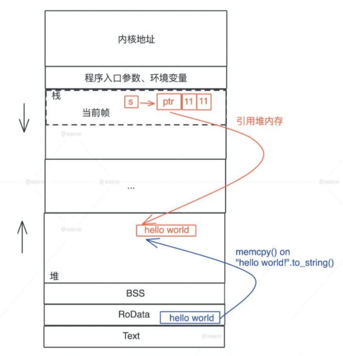
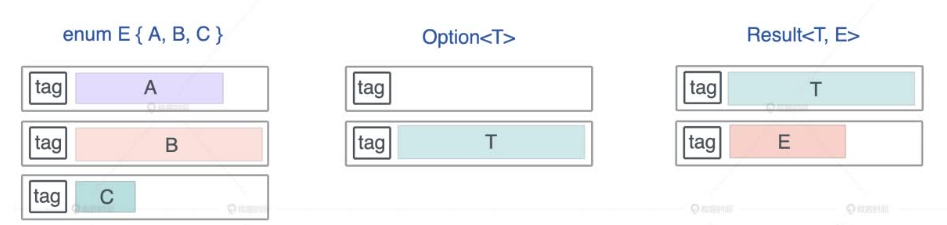

注意，本文是对极客时间《Rust 编程第一课》有关所有权、生命周期以及内存管理相关技术这几个 Rust 核心概念的摘抄笔记，虽然我认为 Rust 官方的 《The Rust Programming Language》很好，但是有些地方有些细节没有讲的很清楚，官方的这本英文的适合入门看，稍微进阶一点可以看看极客时间这门课，比张汉东的那个要好
底层逻辑
内存
对于代码
let s = "hello world".to_string(); |
上述代码调用栈图示为

当执行 "hello world" .to_string() 时，在堆上，一块新的内存被分配出来，并把 “hello world” 逐个字节拷贝过去
在调用的过程中，一个新的帧会分配足够的空间存储寄存器的上下文
图示为
在编译时，一切无法确定大小或者大小可以改变的数据，都无法安全地放在栈上，最好放在堆上
但是栈的问题就是预留空间一般比较小，容易出现 栈溢出 的问题
栈上的内存分配之所以高效是因为只需要移动指针，不会涉及到额外计算、系统调用
而当 需要动态大小的内存时，只能使用堆
堆内存在分配时一般会预留空间，所以不用担心溢出的问题，然而每次空间的分配都会产生一次系统调用，所以堆内存分配低效，因为 malloc 代价高昂
动态生命周期的内存也需要分配到堆上，因为从堆上分配出来的每一块内存需要显式的释放，这使得不同的调用栈之间可以共享数据，如图所示

但是数据放堆也会有问题
- 内存泄露: 手工管理堆内存，堆上内存分配后忘记释放
- 堆越界: 堆上内存被多个线程的调用栈引用，忘加锁，可能会访问到野指针
- use after free: 堆上内存被释放，但栈上指向堆上内存的相应指针没有被清空
所以需要 GC，即垃圾回收
- Tracing GC(Java，定期标记清除不再引用的对象)
- 自动引用计数(Object C/Swift，为每个函数插入 retain/release 语句来自动维护堆上对象的引用计数)
从效率上来说，Tracing GC 在内存分配和释放上无需额外操作，而自动引用计数添加了大量的额外代码处
理引用计数，所以 Tracing GC 效率更高，吞吐量(throughput)更大
但是，GC 释放内存的时机是不确定的，释放时引发的 STW(Stop The World)，也会导致代码执行的延迟(latency)不确定
一个小总结: 栈上存放的数据是静态的，静态大小，静态生命周期；堆上存放的数据是动态的，动态大小，动态生命周期
Rust 的所有权
所有权解决的问题
Rust 所有权需要解决的一个问题是，堆上某个数据存在多个引用怎么办，比如下图
在 main 函数和 find_pos 函数里面，都有一个指向同一个在堆上的数据引用，这种情况会导致一些问题，比如
- 这些引用会做什么操作是无法预测的
- 堆上的内存什么时候能释放，尤其在多个调用栈引用时，很难厘清
大多数语言的方案
- C要求开发者手工处理(手动
malloc): 对开发人员要求非常高，一不小心就是 OOM - C++ 要求开发者半手工处理(引入智能指针): 同样会存在 OOM 问题
- Java 等语言使用 Tracing GC: 会带来 STW 问题，性能上会有影响
- Object C/Swift 等语言使用自动引用计数: 运行时同样会有性能损耗
从源头上看，本质问题是堆上内存会被随意引用
而 Rust 所有权的核心思想，是 限制引用行为本身
那么怎么做限制?
要回答这个问题，我们需要先来回答：谁真正拥有数据或者说值的生杀大权，这种权利可以 共享 还是需要 独占 ?
核心点在于，一个值最好只有一个拥有者
对此，Rust 给出了如下规则:
- 一个值只能被一个变量所拥有，这个变量被称为 所有者 (Each value in Rust has a variable that’ s called its owner)
- 一个值同一时刻只能有一个所有者 (There can only be one owner at a time)
- 当所有者离开作用域，其拥有的值被丢弃 (When the owner goes out of scope, the value will be dropped)，内存得到释放
三条规则合起来就是 要保证单一所有权
第二条规则跟 Rust Move 语义有关
第三条规则中的作用域 (scope) 的概念在 Rust 里是指 代码块 (block)，即 一对花括号 {} 括起来的区域
那么对于上面说的 堆上某个数据存在多个引用怎么办 的问题，Rust 解决如下图所示

main 函数中 data 被 移动 到 find_pos 函数之后就会 失效，这其实就是 所有权转移 的一种体现，find_pos 函数此刻拥有了 data 的所有权，编译器会保证 main 函数随后的代码无法访问到这个 data，即 main 函数丢失了对 data 的所有权，这样就能确保 堆上某个数据只能存在唯一引用
所以 所有权规则，本质上就是让堆上数据的多重引用不复存在
Copy/Move 语义
当然，如果要避免所有权转移之后不能访问的情况，除了需要手动调用 clone (深拷贝)来解决之外，Rust 还提供了 2 种方案
- 如果你不希望值的所有权被转移，在 Move 语义外，Rust 提供了 Copy 语义。如果一个数据结构实现了
Copy trait， 那么它就会使用 Copy 语义。这样在赋值或者是传参时，值会自动 按位拷贝(浅拷贝) - 如果你不希望值的所有权被转移，又无法使用 Copy 语义，那可以通过 Borrow 语义借用数据
当要移动一个值，如果值的类型实现了 Copy trait，就会自动使用 Copy 语义进行按位浅拷贝，否则使用 Move 语义进行移动
Move 语义是指，赋值或者传参会导致值 Move，所有权被转移，一旦所有权转移，之前的变量就不能访问
如图所示
Borrow 语义
Borrow 语义 允许一个值的所有权，在不发生转移的情况下，被其它上下文使用
注意: 在 Rust 中，”借用” 和 “引用” 是一个概念
- 在其他语言中，引用 是一种别名，多个引用拥有对值的无差别的访问权限，本质上是共享了所有权
- 而在 Rust 中，所有的 引用 都只是 借用了”临时使用权”，它并不破坏值的单一所有权约束。
注意: 默认情况下，Rust 的借用都是只读的
在 Rust 中，所有的参数传递都是传值，如果要传引用，那么你必须要显示的指定，我要传什么引用
而 Rust 的引用实现了 Copy trait，按照 Copy 语义，这个引用会被复制一份交给要调用的函数。但是对于这个函数来说，它并不拥有数据本身，数据只是临时借给他使用，所有权还在原来的拥有者那里
比如下面的图
虽然 data 有很多只读借用指向它，但堆上的数据依旧只有 data 一个所有者，即它仍然只有唯一的一个引用，所以值的任意多个引用并不会影响所有权的唯一性
注意: 借用不能超过(outlive)值的生存期
那么，既然有 只读借用，有没有 可变借用?
有的，只不过 Rust 对 可变借用 做了限制，为了限制两种情况
多个可变借用共存
比如代码
let mut data = vec![1, 2, 3];
for item in data.iter_mut() {
data.push(*item + 1);
}这段代码在遍历可变数组
data的过程中，还往data里添加新的数据，会导致死循环，因为data的长度一直在增长同时有一个可变借用和若干个只读借用
比如代码
let mut data = vec![1, 2, 3];
let data1 = vec![&data[0]];
for i in 0..100 { data.push(i); }如果继续往
data添加元素，data对应的堆上的数据预留的空间不够了，就会 重新分配 一片足够大的内存，把之前的值拷过来，然后 释放旧的内存。这样就会让data1中保存的&data[0]借用失效，导致内存安全问题
GC 可以解决情况 2，但是无法解决情况 1，所以 Rust 对于此就有约束，即
- 在一个作用域内，仅允许一个
活跃的可变借用，活跃是指真正被用来修改数据的可变借用，定义了没有使用的不算 - 在一个作用域内，
活跃的可变借用(写)和只读借用(读)是互斥的，不能同时存在
单一所有权的例外情况
这个例外情况就是，一个值拥有多个所有者，例如下面 2 个
- 一个有向无环图中，某个节点可能有 2 个以上的节点指向它，这个按照所有权模型如何描述?
- 多个线程要访问同一块共享内存，怎么办?
因为这些问题在程序的 运行时 才可能遇到，为了灵活性，Rust 提供了 运行时的动态检查
那具体如何在运行时做动态检查呢？运行时的动态检查又如何与编译时的静态检查自洽呢?
答案是使用 引用计数的智能指针: Rc(Reference counter) 和 Arc(Atomic reference counter)
Rc 用来解决情况 1，Arc 用来解决情况 2
即 在运行时检测引用计数
Rc
对某个数据结构 T，我们可以创建引用计数 Rc，使其 拥有多个所有者，而 Rc 会把对应的数据结构 创建在堆上
对一个 Rc 结构进行 clone()，不会将其内部的数据复制，只会增加引用计数
当一个 Rc 结构离开作用域被 drop() 时，也只会减少其引用计数
引用计数为零时，对应的内存才会被真正的清理掉
比如，对于代码
use std::rc::Rc; |
它们共享的堆数据如下图所示
注意: 在这段代码结束时，c 先 drop，引用计数变成 2，然后 b drop、a drop，引用计数归零，堆上内存被释放
但是，上面的代码为何不报错? 因为 Rc 的 clone() 的源码是这样的
fn clone(&self) -> Rc<T> { |
所以 Rc 的 clone() 不复制实际的数据，只是一个引用计数的增加，对于编译器来讲，a、b、c 各自都拥有一个 Rc，所以并不会报错
需要注意的是，Rc 指向的堆内存数据，不会受栈内存生命周期的控制，为什么? 因为存在 Box::leak()
Box::leak() 机制
为了能够处理 Rc 这样的引用计数，Rust 提供了这样一种机制，即能 创建不受栈内存控制的堆内存，让其绕过编译器对所有权规则的检查。而实现这种机制的方式就是 Box::leak()
Box 是 Rust 下的智能指针，它可以强制把任何数据结构创建在堆上，然后在栈上放一个指针指向这个数据结构，但此时堆内存的生命周期仍然是受控的，跟栈上的指针一致
而 Box::leak()，即 通过它创建的对象，从堆内存上泄漏出去，不受栈内存控制，是一个自由的、生命周期可以大到和整个进程的生命周期一致的对象
如下图所示
也相当于 主动撕开了一个口子，允许内存泄漏，而这其实有点类似于 C/C++ 中的 malloc
有了 Box::leak()，我们就可以跳出 Rust 编译器的静态检查，保证 Rc 指向的堆内存，有最大的生命周期，然后我们再通过引用计数，在合适的时机，结束这段内存的生命周期，释放掉通过这种方式创建出来的堆内存
RefCell
对于 Rc 来说，它只是一个 只读的引用计数器，你无法拿到 Rc 结构内部数据的可变引用来修改对应的数据，这个时候就需要 RefCell
和 Rc 类似，RefCell 也绕过了 Rust 编译器的静态检查，允许我们在运行时，对某个只读数据进行可变借用
这里又会涉及到 2 个概念: 外部可变性 和 内部可变性
- 外部可变性: 通过
mut/&mut关键字声明，显式 地声明一个可变的值/引用。编译器在 编译时 会对这个值/引用进行严格的检查，保证只有可变的值/引用，才能修改值/引用内部的数据 - 内部可变性: 不 通过
mut/&mut关键字声明，绕过编译时的检查，在 运行时 得到值/引用的可变借用，从而修改值/引用内部的数据
而 RefCell 利用就是内部可变性
比如如下的代码
use std::cell::RefCell; |
总结如图所示
一般来说，Rc 和 RefCell 结合来使用，就可以利用 RefCell 的内部可变性，来获得数据的可变借用了，即 既可以通过引用计数的方式让一个值可以拥有多个所有者，也能在运行时修改这个值内部的数据
比如下图
Arc
Rc 为了性能，使用的不是线程安全的引用计数器，解决上面提到的情况 2，也就是在多个线程访问同一块内存的情况下，只能使用 Arc，因为它实现了 线程安全的引用计数器
Arc 内部的引用计数使用了 Atomic Usize，而非普通的 usize，Atomic Usize 是 usize 的原子类型，使用特殊的 CPU 指令来保证多线程下的安全
如果不用跨线程访问，可以用效率非常高的 Rc；如果要跨线程访问，那么必须用 Arc
而对于 RefCell 而言，它也不是线程安全的，如果要在 多线程中使用内部可变性，就需要 Mutex 和 RwLock
Mutex: 互斥量，获得互斥量的线程对数据独占访问
RwLock: 读写锁，获得 写锁 的线程对数据独占访问，但当没有写锁的时候，允许有 多个读锁
比如，原来是用 Rc<RefCell<T>> 声明的在单线程环境下使用的数据，可以使用 Arc<Mutex<T>> 或者 Arc<RwLock<T>> 来替换，以便在多线程环境下使用
Rust 的生命周期
先来看几个借用的生命周期的例子
对于代码 1
fn main() { |
这里生命周期更长的 main() 函数变量 r ，引用了 生命周期更短 的 local_ref() 函数里的变量 a，这违背了有关引用的约束，编译器会报错
如下图所示
对于代码 2
fn main() { |
这里尝试把一个本地变量的引用 &v 存入一个可变数组 data 中，由于可变数组 data 存放在堆上，栈上只有一个胖指针指向它，所以这是一个典型的 把栈上变量的引用存在堆上的例子，然而这个是编译通过的，因为 本地变量 v 和可变数组 data 的生命周期是相同的
如下图所示
对于代码 3
fn main() { |
同代码 1 差不多，这里生命周期更长的 main() 函数的可变数组 data ，引用了 生命周期更短 的 push_local_ref() 函数里的变量 v，这违背了有关引用的约束，编译器会报错
如下图所示
可以看到，堆变量的生命周期不具备任意长短的灵活性，因为堆上内存的生死存亡，跟栈上的所有者牢牢绑定，而栈上内存的生命周期，又跟栈的生命周期相关，所以我们 核心只需要关心调用栈的生命周期(除非显式地做 Box::leak() / Box::into_raw() / ManualDrop 等动作)
那么 Rust 是如何确保 引用的生命周期不超出值的生命周期 的呢?
生命周期分类
有 2 类
静态生命周期
即某个值/引用的生命周期 贯穿整个进程的生命周期，btw，当值拥有静态生命周期，其引用也具有静态生命周期，在表述这种引用的时候，可以用
'static来表示。比如&'static str代表这是一个具有静态生命周期的字符串一般而言，全局变量、静态变量、字符串字面量、代码(code)、函数指针 以及使用了
Box::leak后的堆内存，都具有静态生命周期动态生命周期
即某个值在 某个作用域中定义，比如它被创建在 栈 上或 堆 上，其生命周期就是动态生命周期
当这个值的 作用域结束 时，值的生命周期也随之结束
对于动态生命周期，我们约定用
'a或'b或'hello这样的 小写字符 或者 字符串 来表述
用图来总结就是
编译器如何识别生命周期
有 2 个很简单的例子，如图所示
再看一个比较复杂的例子
fn main() { |
上面代码中，因为 在 get_max 函数中，字符串字面量 Cynthia 的生命周期是静态的，而 s1 是动态的，它们的生命周期显然不一致，所以编译器就会报错
当出现了多个参数，它们的生命周期可能不一致时，返回值的生命周期就不好确定了
编译器在编译某个函数时，并不知道这个函数将来有谁调用、怎么调用，所以，函数本身携带的信息，就是编译器在编译时使用的全部信息
此时，就需要我们在函数签名中提供生命周期的信息，也就是 生命周期标注(lifetime specifier)，在生命周期标注时，使用的参数叫 生命周期参数(lifetime parameter)，而 生命周期参数，描述的是参数和参数之间、参数和返回值之间的关系，并不改变原有的生命周期，通过生命周期标注，我们可以告诉编译器这些引用间生命周期的约束
所以可以这么改 max() 函数
// 添加生命周期参数 |
因为 s1 和 s2 以及 max 函数的返回值 的生命周期只要大于等于(outlive) 'a，就符合参数约束，编译器就不会报错
在 get_max 函数中，字符串字面量 Cynthia 的生命周期是静态的，它大于 s1 的生命周期 'a，所以编译器也不会报错
注意，在没有做任何生命周期的标注的情况下，编译器会通过一些简单的规则为函数自动添加标注
- 所有引用类型的参数都有独立的生命周期
'a、'b等- 如果只有一个引用型输入，它的生命周期会赋给所有输出
- 如果有多个引用类型的参数，其中一个是 self，那么它的生命周期会赋给所有输出
一个更复杂的生命周期的图如下
Rust 的内存管理
对于 Rust 而言，它是这么看待堆内存的生命周期的，即 大部分堆内存的需求在于动态大小，小部分需求是更长的生命周期，所以它默认将堆内存的生命周期和使用它的栈内存的生命周期绑在一起，并留了个小口子 Box::leak() 机制，让堆内存在需要的时候，可以有超出栈内存存活期的生命周期
那么如何看待 Rust 的内存管理? 其实可以从 Rust 的几个重要的数据结构(struct/enum/Vec<T>/String)开始，看看它们的数据在内存中是怎么编排的
值的创建
struct
对于 struct 而言，Rust 在内存中排布数据时，会根据每个域的 对齐(aligment) 对数据进行重排，使其 内存大小 和 访问效率 最好
比如下图
如果 struct 内存不对齐会怎么样? 会 严重影响 CPU 加载这段不对齐的内存，从而影响性能
而对于 C 来说，它的 struct 会有如下的规则
- 首先确定每个域的长度和对齐长度，原始类型的对齐长度和类型的长度一致
- 每个域的起始位置要和其对齐长度对齐，如果无法对齐，则添加 padding 直至对齐
- 结构体的对齐大小和其最大域的对齐大小相同，而结构体的长度则四舍五入到其对齐的倍数
用图来对比 C 中 struct 有关域(field)摆放顺序对内存大小的影响就是
所以，如果结构体的定义考虑地不够周全，会为了对齐浪费很多空间
所以在使用 C 时，需要充分考虑每一个域的对齐，合理地排列它们，使其内存使用最高效。但是这个由开发者来干就很费劲，尤其是嵌套的结构体，往往需要经过很仔细的计算和敲打
而 Rust 编译器替我们自动完成了这个优化，用图来解释就是
注意，也可以使用
#[repr]宏来强制让 Rust 编译器不做这个优化，这样它的表现就会和 C 的行为一致了
enum
对于 Rust 下的 enum 而言，它的大小是 标签(tag)的大小 + 最大类型的长度
注意: Rust 中的
enum存在 2 种设计:Option<T>和Result<T, E>
Option是有值 / 无值这种最简单的枚举类型Result包括成功返回数据和错误返回数据的枚举类型
所以
对于 Option<u8>，其大小是 1 + 1 = 2 字节
对于 Option<f64>，其大小是 8 + 8 = 16 字节
下图展示了 enum、 Option<T> 以及 Result<T, E> 的布局

Rust 编译器会对 enum 做一些额外的优化，让某些常用结构的内存布局更紧凑
比如，对于 Option<T> 结构而言，它的 tag 只有两种情况：
- tag == 0: 表示为
None - tag == 1: 表示为
Some
如果 T 是一个引用，按照 enum 的对齐规则，在 64 位的 CPU 下，其大小应该是 8(引用结构对齐是 8) + 8(额外的 padding) = 16 字节，这就很浪费内存了
而 Rust 是这么优化的，因为引用类型的第一个域(field)是个指针，而指针是不可能等于 0 的，所以对于 Option<T>，Rust 就 复用了这个指针，当其为 0 时，表示为 None，否则就是 Some，这样就能很巧妙地减少了内存的占用
Vec 和 String
之所以 Vec<T> 和 String 要放在一起讲，是因为在 Rust 源码中，String 结构内部就是一个 Vec<u8>
如图所示
其中 Vec<T> 结构是一个 3 个 word 的胖指针，它包含
- ptr: 指向堆内存的指针 pointer
- cap: 分配的堆内存的容量 capacity
- len: 数据在堆内存的长度 length
值的使用
值的使用大部分都是 Copy 或者 Move，而 Copy 和 Move 在内部实现上，都是浅层的按位做内存复制，只不过 Copy 允许你访问之前的变量，而 Move 不允许
用图来表示就是
为什么 Copy 和 Move 的效率高呢? 因为它们要复制的都只是原生类型(Copy)或者栈上的胖指针(Move)，并不涉及到堆内存的复制(深拷贝)
一个例外是 对栈上的大数组传参，这个就需要复制整个数组了，所以 不要在栈上放大数组
在 Rust 下，值使用的过程中还会产生一种情况，就是 值的动态增长，这种情况会发生在 集合类型的数据结构 中
比如 Vec<T>，当你使用完堆内存目前的容量后，还继续添加新的内容，就会触发堆内存的自动增长。有时候，集合类型里的数据不断进进出出，导致集合一直增长，但很可能只使用到了很小一部分内存容量，这个时候可以使用 shrink_to_fit 的方法，来节约对内存的使用
值的销毁
值的释放
当所有者离开作用域，它拥有的值会被丢弃，那么它是怎么被丢弃的?
主要是使用了 Drop trait
Drop trait 有点类似于 C++ 中的析构函数，当一个值要被释放，它的 Drop trait 就会被调用
比如下图
如果要释放的值是一个复杂的数据结构，比如一个结构体，那么这个结构体在调用 drop() 时，会依次调用每一个域(field)的 drop() 函数，如果这个域(field) 也是一个结构体，那么就 递归调用它对应的 drop() 函数
如图所示
堆内存的释放
在释放堆内存的时候，整个过程简单清晰，就是单纯调用 Drop trait，不需要有其他顾虑。
注意: 如果你定义的
drop()函数和系统自定义的drop()函数都drop()某个域(field)， Rust 编译器会确保，这个域(field) 只会被 drop 一次
释放其他资源
Drop trait 也可以释放一些如 socket、文件、锁等等资源，Rust 对所有的资源都有很好的 RAII (Resource Acquisition Is Initialization 即 资源获取即初始化)支持。
由于 Rust 的这个支持，就可以 不用显式地关闭文件、 关闭 socket、 释放锁，就可以 避免因为多个变量和多种异常或者错误叠加，从而成倍增加因为忘记释放资源的而产生的风险，比如死锁或者资源泄露等问题
Rust 存在 GC 吗
先说结论，Rust 不存在 GC，为什么?
在之前的 Rust 官方的 FAQ 页面中，(为什么是 prev，因为现在 Rust 官方网站翻新了，这个属于旧页面)有这么一段

那么
- Rust 有 RC 和 Arc 智能指针，存在 reference counting 即引用计数
- Rust 有 Drop trait 去释放结束生命周期的变量或者内存
这 2 点不算 GC 吗
不能算，因为
- GC 作为惯用语，通常并不单单指释放内存的行为，不然栈上变量自动释放是否也算 GC?
- 使用 Rc 和 Arc 智能指针仍然需要认真考虑变量的生命周期，Rust 这种强制的约束规则也不太符合 GC 能自动化的帮你处理这些事情一起处理好了的特征，因为这只是 只是换了一种更安全的方式让我们手动管理内存而已
其他零散 CS 概念
基本概念
如图所示
编程语言类型
如图所示
注意: 所有原生类型的大小都是固定的，因此它们可以被分配到栈上
引用(reference)和指针非常类似，不同的是，引用的解引用访问是受限的，它只能解引 用到它引用数据的类型，不能用作它用
函数、方法和闭包
如图所示
函数是对代码中重复行为的抽象
而闭包是将函数，或者说代码和其环境一起存储的一种数据结构。闭包引用的上下文中的自由变量，会被捕获到闭包的结构中，成为闭包类型的一部分
接口和虚表
下图展示了一个 Vec 数据在运行期被抹去类型，生成一个指向 Write 接口引用的过程：
接口是一个软件系统开发的核心部分，它反映了系统的设计者对系统的抽象理解。作为一个抽象层，接口将使用方和实现方隔离开来，使两者不直接有依赖关系，大大提高了复用性和扩展性
并发(concurreny)与并行(parallel)
如图所示
并发是同时与多件事情打交道的能力。比如系统可以在任务 1 做到一定程度后，保存该任务的上下文，挂起并切换到任务 2，然后过段时间再切换回任务 1。
并行是同时处理多件事情的手段。任务 1 和任务 2 可以在同一个时间片下工作，无需上下文切换。
同步和异步
- 同步是指一个任务开始执行后，后续的操作会阻塞，直到这个任务结束
- 异步是指一个任务开始执行后，与它没有因果关系的其它任务可以正常执行，不必等待前一个任务结束
编程范式
编程范式主要是用来 提升代码质量 的，主要有几个方面的内容
数据结构的泛型
比如如下的的代码struct Connection<S> {
io: S,
state: State,
}代码的泛型化
比如如下的代码
指针和引用
指针是一个持有内存地址的值，可以通过解引用(deference)来访问它指向的 内存地址
引用(reference)和指针非常类似，引用的解引用访问是受限的，它只能解引用到它引用数据的类型，不能用作它用
指针和引用是原生类型，它们可以分配在栈上
比正常指针携带更多信息的指针，我们称之为胖指针(fat pointer)